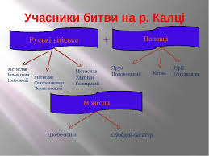
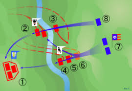

БИТВА НА РІЧЦІ 1223– перше збройне зіткнення Русі з монголами 28 трав. 1223. Після того, як 20-тис. монгол. кіннота під  проводом Джебе і Субедея вторглася в причорномор. степи й розгромила половців, уцілілі половецькі хани звернулися за допомогою до рус. князів, і ті на "снемі" (з'їзді) в Києві (лют.–берез. 1223; див. Київський з'їзд князів 1223) вирішили підтримати сусідів. Похід рус. полків у степ очолили вел. кн. київ. Мстислав Романович, галицький кн. Мстислав Мстиславич і черніг. кн. Мстислав Святославич. Після вдалих авангардних боїв з ворогом рус.-половецьке військо зустрілося з осн. силами монгол. кінноти на березі р. Калка (нині р. Кальчик, притока Кальміусу). Мстислав Мстиславич галицький разом із половцями атакував ворога, не узгодивши свої дії з ін. князями. Вел. кн. київ. Мстислав Романович не брав участі в битві.  Дружина Мстислава Мстиславича зім'яла монголів, але половці не витримали удару дисциплінованої ворожої кінноти, побігли і зруйнували бойовий порядок рус. полків. Довелося відступити і Мстиславу Мстиславичу, і його зятеві Данилові Галицькому, тоді волин. князеві. Мстислав Романович сподівався відсидітися в укріпленому таборі, який монголи спочатку безуспішно штурмували протягом трьох днів, а згодом вдалися до хитрощів– пообіцяли у випадку капітуляції відпустити князів з військом додому. Мстислав Романович і дехто з ін. князів пристали на цю пропозицію, однак, після того як вони залишили укріплення табору, монголи перебили і їх, і багато воїнів. Київська Русь одержала перше попередження про наближення зі Сходу нечуваного, "тьмочисленного", хитрого і неймовірно сильного ворога. Однак рус. князі, які загрузли в міжусобних чварах, не надали особливого значення поразці на Калці.